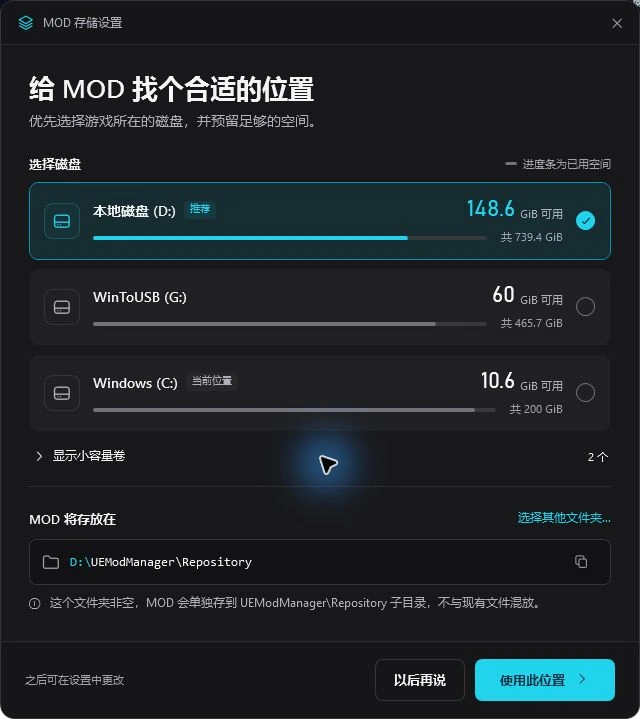

快速开始
第一次使用
- 选好存储位置。挑一个放 MOD 的文件夹，别放系统盘，最好和游戏同盘。
- 添加游戏。选预设，核对游戏和 MOD 目录。
- 导入并启用。先装几个试试，能正常进游戏再加。
游戏列表
以下游戏开箱即用。没有的点“添加游戏”，选引擎、填路径即可（不确定就选通用规则）。
加载器、前置和适配的游戏版本，以 MOD 作者说明为准。
 黑神话·悟空Unreal Engine
黑神话·悟空Unreal Engine 剑星 / 剑星 (CNS)Unreal Engine
剑星 / 剑星 (CNS)Unreal Engine 光与影：33号远征队Unreal Engine
光与影：33号远征队Unreal Engine 明末·渊虚之羽Unreal Engine
明末·渊虚之羽Unreal Engine- 影之刃零Unreal Engine
 暗黑破坏神4暗黑 4 引擎
暗黑破坏神4暗黑 4 引擎 生化危机9RE Engine
生化危机9RE Engine 识质存在RE Engine
识质存在RE Engine 无主之地4Unreal Engine
无主之地4Unreal Engine 死亡搁浅2Decima
死亡搁浅2Decima 杀戮尖塔2Godot
杀戮尖塔2Godot
MOD 放在哪里？
MOD 放在你选的仓库文件夹，默认不放系统盘；清单、分类、方案和设置另存在用户目录，和程序分开。
想换盘，在设置里迁移仓库即可。

老用户升级
把旧数据带过来
- 关闭旧版本。先备份重要 MOD、配置和存档，再装新版。
- 运行迁移脚本。双击新版安装目录里的
一键迁移老版本数据.bat，按提示操作，完成后会自动打开管理器。 - 检查一遍。核对游戏路径、MOD 列表、分类和启用状态；确认无误前别删旧目录和备份。
迁移失败？保留备份和报错信息，看使用说明书或到QQ 交流群 147223127反馈。
v2.1.3 · 2026-10-29
这一版更新了什么
- 支持影之刃零。选游戏、自动检测，MOD 文件夹直接找好。
- MOD / 插件 / 配置自动分开。主界面一键切换查看。
- 界面会动了。按压回弹、卡片悬停、列表入场、对话框弹出。
- 新手引导。第一次打开，跟着走就会用。
- 更顺手。MOD 仓库默认不放系统盘；一键处理冲突时显示进度；卡片显示分类标签；背景透明度和模糊滑块更清楚。
- 修复。设置页保存时误报错、导入后台缓存偶发出错、官方补丁 pak 被当成 MOD。
隐私与联网说明
MOD 管理在本地完成
无需登录，MOD 文件只存在你的电脑上。
更新检查与匿名统计
默认不上报。你在设置里打开后，程序会发送随机生成的设备编号、软件版本和 Windows 版本；登录时可能附带邮箱的哈希值，用于区分账号。没打开时，只在启动后查询一次最新版本号，不带任何标识。
不上传邮箱明文、电脑名、文件路径、游戏目录或 MOD 清单。注意：邮箱哈希仍可能关联到账号。
在哪里开关？
“设置 → 常规参数 → 检查更新与匿名统计”，这个开关同时控制更新检查。
登录、注册、找回密码需要联网，只发送对应操作必需的账号信息，与统计开关无关。
交流与反馈
加入交流群
感谢相伴
鸣谢
感谢参与测试、提出建议和支持开发的朋友。
胖虎、YUki、Tarnished、春告鳥、蘭、虎子、神秘不保底男、文铭、阪、林墨、Daisuke、虎子哥、枪王、爱酱MOD管理器交流群全体群友
游戏名称、图标与商标归各自权利人所有，仅用于标识对应游戏。查看图标来源。
支持作者
如果工具帮到了你，可以请我喝杯咖啡。